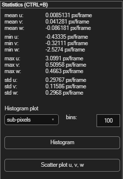

Statistics
A quick numeric and visual summary of the current frame's velocity data — useful for sanity-checking results and spotting data-quality problems.
Open via Statistics → Statistics (Ctrl+B).

At-a-glance values
The panel displays the mean, min, max and std (standard deviation) of u, v and w for the current frame, in groups of three, updating automatically as you move between frames. The w lines are only filled for stereo-PIV results (2D PIV: N/A).
Histogram
Choose what to plot from Histogram plot: u velocity, v velocity, velocity magnitude, or sub-pixels. Set the number of bins (default 100), then click Histogram.
Scatter plot
Click Scatter plot u & v to plot every vector's u component against its v component — the same kind of plot used to set velocity limits, but here purely for inspection.
Stereo-PIV
With stereo-PIV results the histogram list has one more item, w velocity, and velocity magnitude is the 3D magnitude. sub-pixels uses the 2D result of the camera that is shown, because peak locking happens in the 2D analysis of each camera. The scatter button becomes Scatter plot u, v, w and draws a 3D scatter plot that you can rotate.